Kết quả trên tập Test
Mô hình, siêu tham số và ngưỡng chốt trên Validation; Test chỉ dùng đúng một lần.
- F1 lớp rời bỏ
- 0,639Validation 0,646 · baseline 0,493
- Recall · Precision
- 0,60 · 0,68bắt 183 / 305 người rời bỏ
- Bắt thêm so với baseline
- +70+62%, đổi lại thêm 45 lần báo nhầm
- ROC-AUC · Accuracy
- 0,863 · 0,862PR-AUC 0,710
Sản phẩm nộp
- Notebook Google Colab ↗ Xem trên GitHub ↗ Chạy được Run all từ đầu đến cuối.
- Báo cáo PDF Chưa cập nhật Tóm tắt cách làm, bảng metric và kết luận.
- Video trình bày Chưa cập nhật 5–10 phút, YouTube Public hoặc Unlisted.
Nội dung
Mô tả dữ liệu & EDA
10.000 khách hàng của một ngân hàng ở Pháp, Đức và Tây Ban Nha. Sau khi bỏ 3 cột định danh còn 10 feature.
| Feature | 6 numerical (CreditScore, Age, Tenure, Balance, NumOfProducts, EstimatedSalary) · 2 binary (HasCrCard, IsActiveMember) · 2 categorical (Geography, Gender) |
|---|---|
| Missing values | 1.521 ô thiếu ở 5 cột (2,1–3,9% mỗi cột), 14,1% số dòng có ít nhất một ô thiếu. Nhóm tự tạo theo cơ chế MCAR với seed cố định vì dữ liệu gốc không thiếu. |
| Trùng lặp | 0 dòng trùng · 0 CustomerId trùng |
| Mất cân bằng | 7.963 ở lại (79,6%) · 2.037 rời bỏ (20,4%) — luôn đoán “ở lại” đã đạt Accuracy 79,6% |
| Outlier (IQR) | Age 348 giá trị (3,6%) · NumOfProducts 60 (0,6%) · CreditScore 15 (0,15%) — giữ lại, dùng RobustScaler |

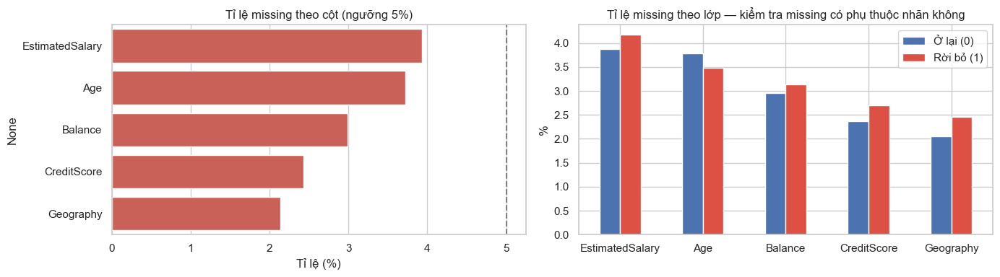

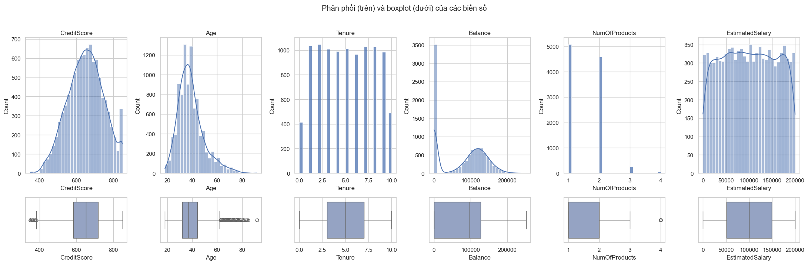
IsZeroBalance; EstimatedSalary gần như phân phối đều.
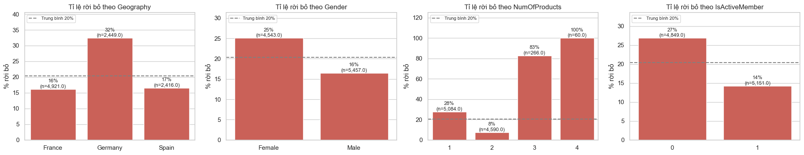

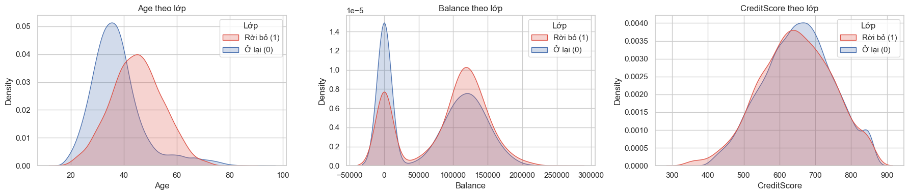

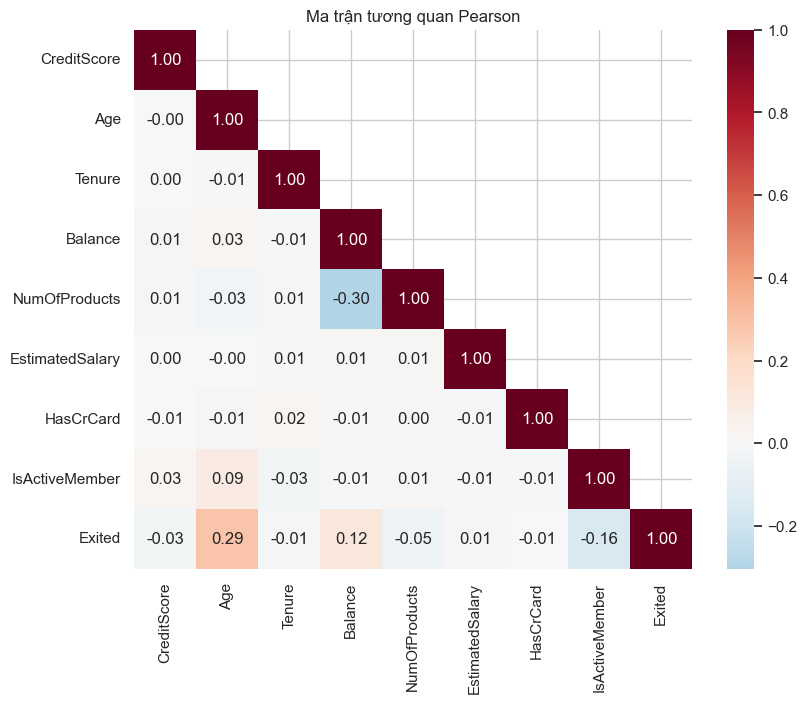

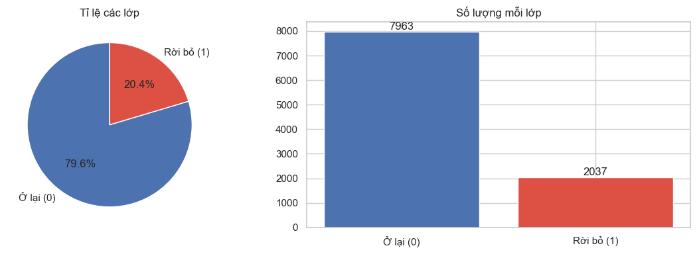
Tỉ lệ rời bỏ theo nhóm tuổi
| Nhóm tuổi | Số KH | % rời bỏ |
|---|---|---|
| 18–30 | 1.878 | 7,5% |
| 31–40 | 4.305 | 12,2% |
| 41–50 | 2.229 | 33,9% |
| 51–62 | 868 | 54,7% |
| 63–70 | 222 | 27,0% |
| > 70 | 126 | 8,7% |
Chuẩn bị dữ liệu
Mọi bước học tham số đều nằm trong Pipeline và chỉ fit trên Train để không rò rỉ dữ liệu.
| Nhóm cột | Điền thiếu | Scaling | Encoding |
|---|---|---|---|
| Numerical: CreditScore, Age, Tenure, Balance, EstimatedSalary | median | RobustScaler | — |
| Binary: HasCrCard, IsActiveMember, IsZeroBalance | mode | giữ 0/1 | — |
| Categorical: Geography, Gender, ProductsGroup | mode | — | One-Hot |
IsZeroBalance tách hai đỉnh của Balance (rời bỏ 13,8% khi số dư bằng 0, 24,0% khi có số dư).
ProductsGroup chuyển NumOfProducts sang categorical và gộp 3–4 thành 3+ vì quan hệ phi tuyến và nhóm 4 sản phẩm chỉ có 60 khách hàng.

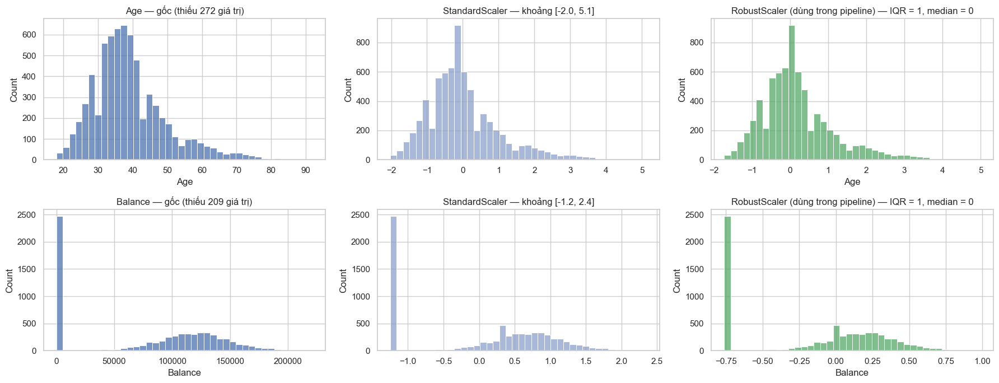
Phân tích & mô hình hoá
Hai baseline và ba thuật toán, mỗi thuật toán chạy có và không có class_weight='balanced'. Thước đo chính: F1 lớp rời bỏ.
| Mô hình (Validation) | Accuracy | Precision | Recall | F1 | ROC-AUC | PR-AUC |
|---|---|---|---|---|---|---|
| Dummy (lớp đa số) | 0,796 | 0,000 | 0,000 | 0,000 | 0,500 | 0,204 |
| LogisticRegression | 0,844 | 0,740 | 0,363 | 0,487 | 0,854 | 0,662 |
| LogisticRegression + balanced | 0,770 | 0,463 | 0,788 | 0,583 | 0,857 | 0,660 |
| RandomForest | 0,873 | 0,807 | 0,493 | 0,613 | 0,881 | 0,724 |
| RandomForest + balanced | 0,852 | 0,634 | 0,650 | 0,642 | 0,879 | 0,720 |
| HistGradientBoosting | 0,864 | 0,766 | 0,480 | 0,590 | 0,884 | 0,724 |
| HistGradientBoosting + balanced | 0,828 | 0,561 | 0,719 | 0,630 | 0,876 | 0,718 |

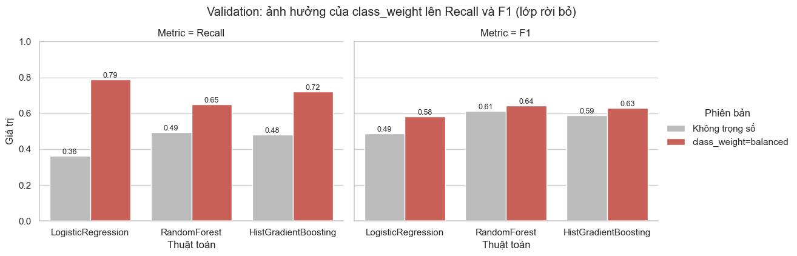

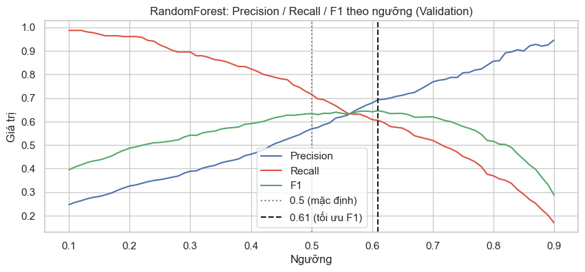
class_weight nằm trong lưới: cả hai đều tự chọn balanced.
Sau tinh chỉnh F1 Validation là 0,634 so với 0,630 — chênh lệch nằm trong sai số, nhóm chọn Random Forest vì permutation importance dễ diễn giải theo cột gốc.
Đánh giá & phân tích lỗi
Bốn cấu hình trên cùng tập Test, mỗi lần chỉ thay đổi một thứ để thấy đóng góp của từng kỹ thuật.

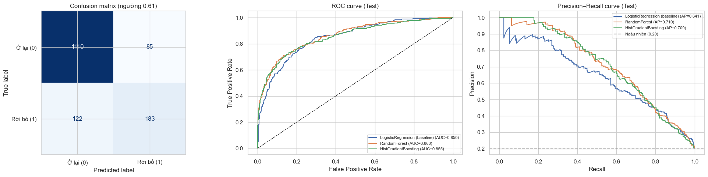
| Cấu hình (Test) | Precision | Recall | F1 | PR-AUC | Bắt được | Báo nhầm |
|---|---|---|---|---|---|---|
| 1. Baseline LogReg | 0,739 | 0,370 | 0,493 | 0,641 | 113 | 40 |
| 2. RandomForest | 0,800 | 0,433 | 0,562 | 0,713 | 132 | 33 |
| 3. + class_weight | 0,545 | 0,715 | 0,618 | 0,710 | 218 | 182 |
| 4. + class_weight + ngưỡng 0,61 | 0,683 | 0,600 | 0,639 | 0,710 | 183 | 85 |

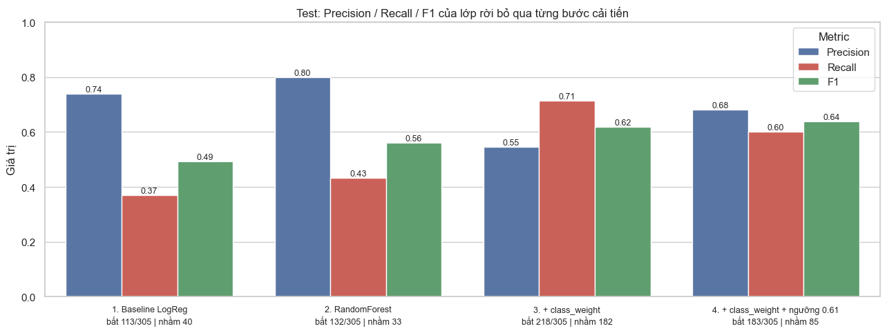

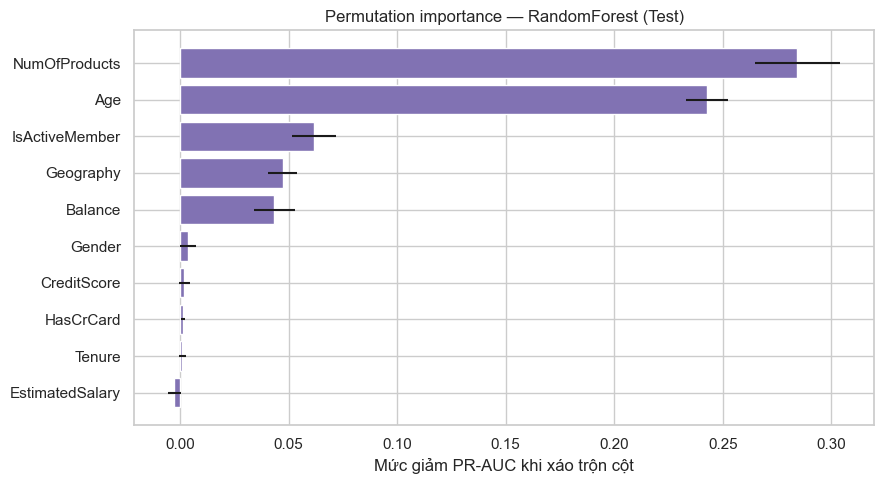

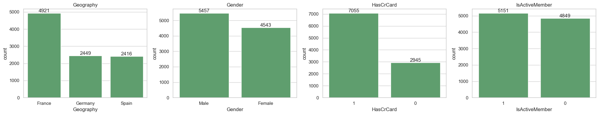

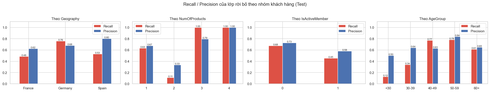
Hàm suy luận trên khách hàng mới
| Khách hàng | Xác suất rời bỏ | Kết luận (ngưỡng 0,61) |
|---|---|---|
| A. 52 tuổi, Đức, 1 sản phẩm, không hoạt động | 93,1% | Nguy cơ rời bỏ, nên liên hệ giữ chân |
| B. 30 tuổi, Pháp, 2 sản phẩm, hoạt động | 3,3% | Ít nguy cơ |
| C. thiếu Age, Balance, EstimatedSalary | 90,2% | Nguy cơ rời bỏ, nên liên hệ giữ chân |
| D. thiếu cả NumOfProducts và Geography | 67,1% | Nguy cơ rời bỏ, nên liên hệ giữ chân |
Kết luận, hạn chế & hướng phát triển
Kết luận. Yếu tố quyết định nhất là số sản phẩm và tuổi, sau đó mới tới mức độ hoạt động và quốc gia. Nhóm khách hàng nên ưu tiên chăm sóc là người 40–60 tuổi, ở Đức, không hoạt động thường xuyên, đang dùng 1 sản phẩm hoặc từ 3 sản phẩm trở lên. F1 trên Validation (0,646) và Test (0,639) gần nhau, cho thấy việc chọn ngưỡng không bị overfit.
Hạn chế. Missing values do nhóm tự tạo theo MCAR, dễ hơn dữ liệu thiếu ngoài đời (MAR/MNAR). EDA làm trên toàn bộ dữ liệu trước khi chia tập nên các quyết định tạo đặc trưng có tham khảo gián tiếp tập Test. Dữ liệu là ảnh chụp một thời điểm, không có lịch sử hành vi. Ngưỡng chọn theo F1 ngầm coi chi phí bỏ sót và báo nhầm bằng nhau.
Hướng phát triển. Chọn ngưỡng theo chi phí kinh doanh thật; thử SMOTE để so với class weight; hiệu chỉnh xác suất để dùng như điểm rủi ro; bổ sung lịch sử giao dịch để bắt được nhóm khách hàng trẻ; dùng SHAP để giải thích từng dự đoán cho nhân viên chăm sóc khách hàng.